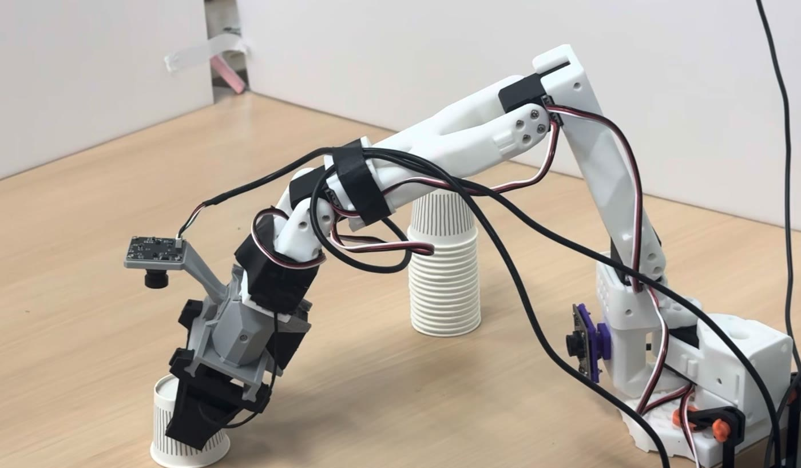
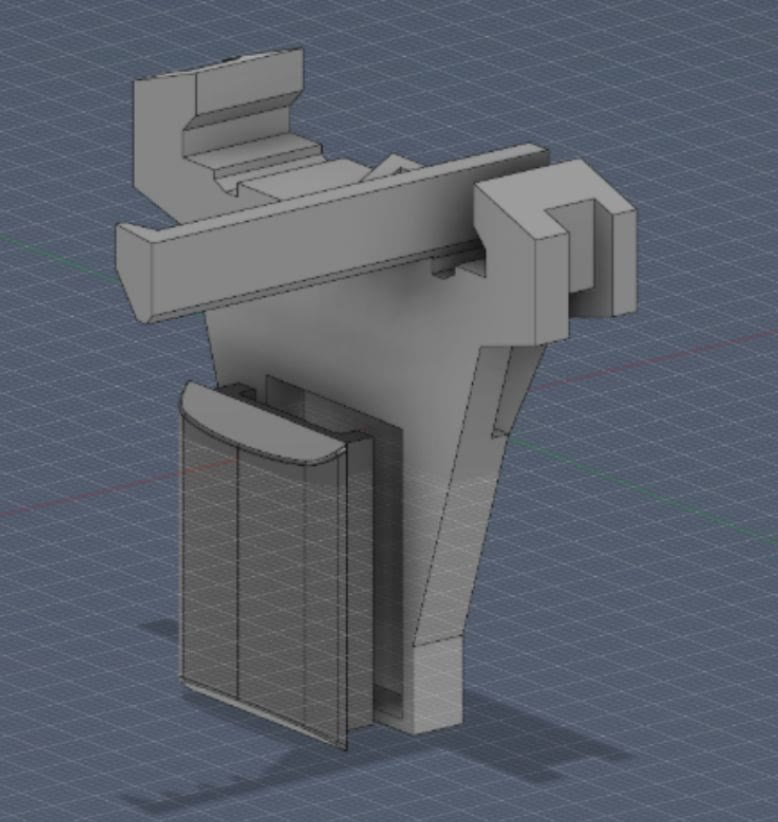
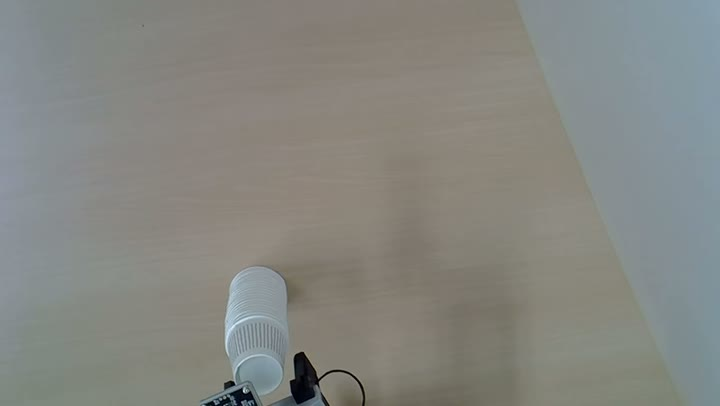
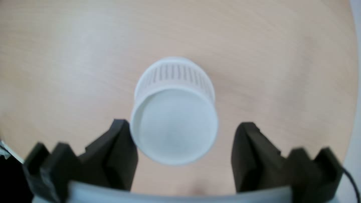
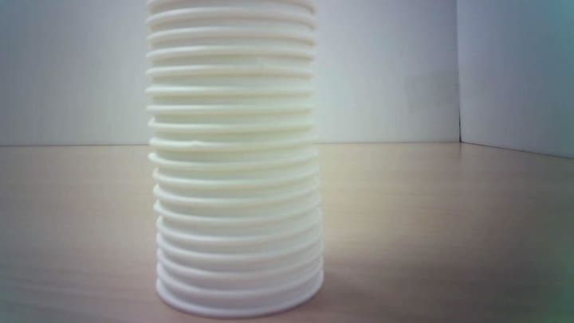
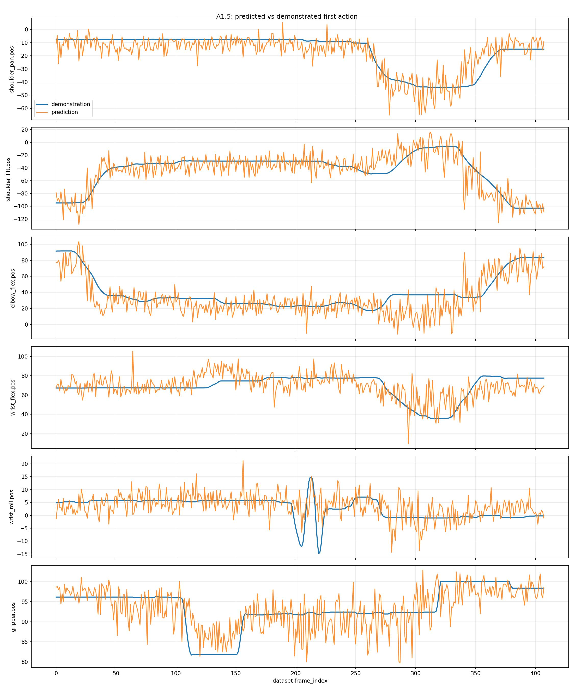

Vision · Tactile · Language · Action
Learning to grasp with touch.
Can fingertip sensing improve next-action prediction? We compare three π₀.₅ policy variants using recorded cup pick-and-place demonstrations from the SO-101.

Research summary
Two Paxini sensors measure normal force at the gripper’s fingertips. VTLA tests two ways to feed those measurements into π₀.₅.
Across 408 frames of one recorded episode, the A1.5 tactile prefix had the lowest error for both the first action and the full action chunk. Physical rollout performance remains an open question.
From camera to contact
Five teleoperated recordings of picking up a cup and placing it on the left. Each pairs the wrist camera with the ring and pinky force maps at 30 frames per second. The maps share a 0–4.6 color scale. Higher readings use the top color.
Wrist camera
Paxini force map
Wrist camera
Paxini force map
Wrist camera
Paxini force map
Wrist camera
Paxini force map
Wrist camera
Paxini force map
Where touch enters π₀.₅
All three variants use camera views, a language instruction and joint state. Follow the signal to see whether tactile measurements enter the PaliGemma prefix or the Gemma action expert.
Read the three variant definitions
- A0 · Baseline
- Uses vision, language and robot joint state without tactile input.
- A1.5 · Tactile prefix
- Encodes the tactile map with a CNN and inserts the resulting token into the PaliGemma prefix.
- A2 · Action gated
- Uses local and global contact statistics to gate conditioning in the Gemma action expert.
A closer look at the testbed
The SO-101 gripper holds two Paxini GEN3 M3025-series sensors, one on each contact surface. Each sensor measures normal force at 77 taxels. The data pipeline preserves their positions in two padded 9 × 9 maps.

- 60
- Recorded episodes
- 36,625
- Dataset frames
- 30 Hz
- Sampling rate



Comparing predicted actions
The offline evaluation compares policy predictions against the recorded actions on all 408 frames of episode 0. A1.5 had the lowest first-action and action-chunk mean absolute errors in that episode.
First-action MAE · lower is better
View the full results table and joint traces
| Model | First MAE | Chunk MAE | Direction | Mean inference |
|---|---|---|---|---|
| A0 | 8.832 | 9.094 | 55.22% | 0.191 s |
| A1.5 | 7.847 | 8.420 | 56.52% | 0.203 s |
| A2 | 8.355 | 8.915 | 55.18% | 0.198 s |
